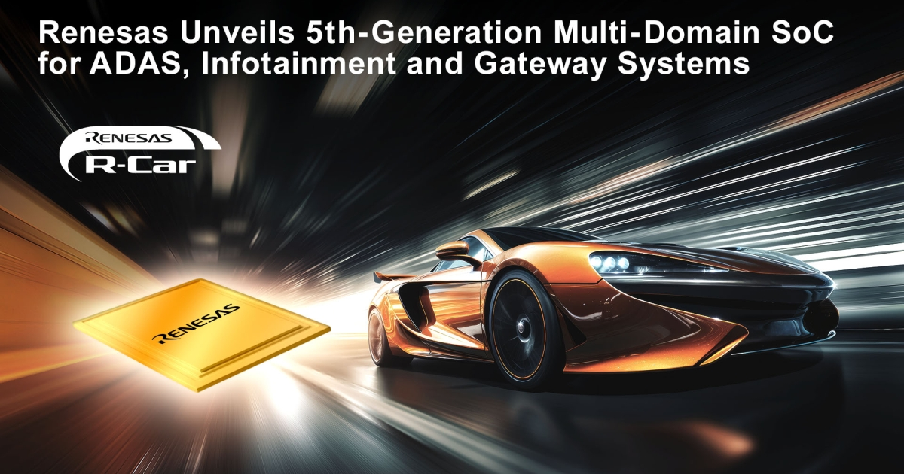

2024年11月13日、ミュンヘン（ドイツ）および東京（日本）発 - 先進半導体ソリューションの主要サプライヤーであるルネサス エレクトロニクス株式会社（TSE:6723）は本日、先進運転支援システム（ADAS）、車載インフォテインメント（IVI）、ゲートウェイアプリケーションなど、複数の車載ドメインを単一チップで担う新世代の車載フュージョンSoCを発表した。最新の3ナノメートル（nm）車載プロセス技術で製造される待望のR-Car X5H SoCは、R-Car X5シリーズの最初のデバイスであり、業界最高水準の統合度と性能を提供する。これによりOEMとTier 1は、開発を効率化し、将来に備えたシステムソリューションを実現するため、集中型Electronic Control Unit（ECU）へ移行できる。ルネサスのR-Car X5Hは、独自のハードウェアベースの分離技術により、複数の車載ドメイン向けに高度に統合されたセキュアな処理ソリューションを単一チップで提供する、業界でも最初期の製品の一つである。さらにこの新SoCは、チップレット技術を用いてAIおよびグラフィックス処理性能を拡張する選択肢も提供する。
第5世代（Gen 5）R-Carファミリの中で最高性能のデバイスであるR-Car X5Hは、Software-Defined Vehicle（SDV）開発の複雑化に直接対応する。こうした課題には、車両安全性を確保しながら、コンピュート性能、消費電力、コスト、ハードウェアとソフトウェアの統合を最適化することが含まれる。アプリケーション処理、リアルタイム処理、GPUとAIコンピュート、大規模ディスプレイ機能、センサー接続を単一チップ上で密接に結合することで、これらのデバイスは自動運転、IVI、ゲートウェイアプリケーションの新しいクラスを可能にする。
この新SoCシリーズは、業界をリードするTOPS/W性能により最大400 TOPSのAIアクセラレーションを実現し、GPU処理では最大4 TFLOPS相当*1を提供する。アプリケーション処理向けに合計32個のArm Cortex-A720AE CPUコアを搭載し、1,000K DMIPSを超える性能を提供する。また、6個のArm Cortex-R52デュアルロックステップCPUコアにより、外部マイクロコントローラ（MCU）なしでASIL D機能をサポートしつつ、60K DMIPSを超える性能を実現する。TSMCの最先端プロセスノードの一つを用いて製造されるこの新SoCシリーズは、最高水準のCPU性能と、5nmプロセスノード向けに設計されたデバイスと比較して30から35%の消費電力削減*2を両立する。こうした電力効率の高い機能は、追加の冷却ソリューションを不要にすることでシステム全体のコストを大幅に下げると同時に、車両の航続距離も延ばす。
R-Car Gen 5 SoCは強力なネイティブNPUおよびGPU処理エンジンを備えているが、ルネサスは顧客がチップレット拡張によって性能をスケールアップできるようにしている。たとえば、400 TOPSのオンチップNPUと外部NPUをチップレット拡張で組み合わせると、AI処理性能を3倍から4倍以上に拡張できる。シームレスなチップレット統合のため、R-Car X5Hは標準のUCIe（Universal Chiplet Interconnect Express）ダイ間インターコネクトとAPIを提供し、非ルネサス製チップであっても、マルチダイシステム内の他コンポーネントとの相互運用性を容易にする。この柔軟な設計アプローチにより、自動車OEMとTier 1は異なる機能を組み合わせ、将来のアップグレードも含めて車両プラットフォーム全体でシステムをカスタマイズできる。
自動車メーカーとTier 1サプライヤーはより高い性能と機能を求めているが、安全性は依然として最優先事項である。他のSoCがソフトウェアベースの分離のみに依存する一方、R-Car X5H SoCはハードウェアベースのFreedom from Interference（FFI）技術も提供する。このハードウェア設計実装は、ブレーキ・バイ・ワイヤのような安全上重要な機能を、重要度の低い機能から安全に分離する。安全上重要と判断された機能には、それぞれ独立したCPUコア、メモリ、インターフェースを持つ、別個の冗長ドメインを割り当てられる。これにより、別ドメインのハードウェアまたはソフトウェア障害に起因する壊滅的な車両故障を防ぐ。R-Car X5Hは、ワークロードの優先順位を決定し、処理リソースをリアルタイムに割り当てるQuality of Service（QoS）管理も備える。
「R-Car Gen 5プラットフォームにおける最新のイノベーションは、今日の自動車産業が直面する複雑な課題に対応するものです」と、RenesasのHigh Performance Computing担当Senior Vice President and General ManagerであるVivek Bhan氏は述べている。「当社の顧客は、ハードウェア最適化、安全規格への適合、柔軟でスケーラブルなアーキテクチャ選択、シームレスなツールおよびソフトウェア統合までをカバーする、エンドツーエンドの車載グレードシステムソリューションを求めています。R-Car Gen 5ファミリはこれらの要求を満たしており、当社は次世代車載技術に向けたSDV開発とShift-Leftイノベーションの加速を支援していきます。」
「Renesasのような信頼される車載技術リーダーと提携し、当社の最先端3nmプロセス技術を用いて同社の最新イノベーションを市場に投入できることを大変うれしく思います」と、TSMCのBusiness Development and Global Sales担当Senior Vice President兼Deputy Co-COOであるDr. Kevin Zhang氏は述べている。「当社のN3Aプロセスは先進車載SoC向けに最適化されており、AEC Q-100 Grade 1信頼性において業界をリードする3nm性能を提供します。Renesasと協力してこのR-Car Gen 5プラットフォームを開発し、『シリコン定義車両』の未来を再形成する支援ができることを楽しみにしています。」
TechInsightsのAutomotive Market Analysis担当Executive DirectorであるAsif Anwar氏は、「SDVへの道筋は、コックピットのデジタル化、車両接続性、ADAS機能によって支えられる。機能がゾーンコントローラおよび集中型コントローラへ統合され、必要なコンピュート能力を提供するにつれ、車両の電気・電子（E/E）アーキテクチャが中核的な実現要素になる。TechInsightsは、ゾーンコントローラおよび高性能コンピュートSoCプロセッサ市場が、2028年から2031年の間に年平均成長率17%で成長すると予測している」と述べている。
Anwar氏はさらに、「Renesasは車載プロセッサの上位3社に入るサプライヤーであり、SDVの要件に合わせてスケールする第5世代R-Car X5H SoCに、数十年の経験を活用している。3nmプロセスを活用することで、R-Car X5H SoCは、自動車産業が最適化された電力予算で車両プラットフォーム全体に利用できる多用途ソリューションセットを実装できるようにする。これをRoX SDVプラットフォームと組み合わせることで、Renesasはソフトウェアファーストでクロスドメインなアプローチを提供し、自動車産業の市場投入までの時間を短縮できる」と続けた。
RenesasのR-Car Gen 5は、ゾーンECUからハイエンド中央コンピュートまで、エントリーレベル車両からラグジュアリークラスのモデルまで、業界で最も幅広い処理要件をサポートする。Arm CPUコアに基づく新しい統一ハードウェアアーキテクチャにより、R-Car Gen 5の開発者は、Renesasの幅広い新64ビットSoCラインアップ、およびクロスオーバー32ビットMCUや車載32ビットMCUを含む将来製品にわたり、同じソフトウェア、ツール、アプリケーションを再利用できる。R-Car次世代ファミリの一部として、RenesasはArmを搭載する新しいR-Car MCUシリーズで車両制御ポートフォリオを拡張している。Renesasは、ボディおよびシャシーアプリケーション向けにセキュリティを強化した新32ビットMCUシリーズを2025年第1四半期にサンプル出荷する予定である。
Renesasの最新R-Car X5Hと将来のすべてのGen 5製品は、ハードウェアとソフトウェアを包括的な開発プラットフォームに統合することで、SDV開発を加速するよう設計されている。新たに立ち上げられたR-Car Open Access（RoX）SDVプラットフォームは、自動車開発者が安全で継続的なソフトウェア更新を備えた次世代車両を迅速に開発するために必要な、すべての重要なハードウェア、オペレーティングシステム（OS）、ソフトウェア、ツールを統合する。RoXはOEMとTier 1サプライヤーに対し、ADAS、IVI、ゲートウェイ、クロスドメインフュージョンシステム、さらにボディ制御、ドメイン制御、ゾーン制御システム向けに、幅広いスケーラブルなコンピュートソリューションを仮想的に設計できる柔軟性を提供する。
Renesasは、2024年11月12日から15日にドイツ・ミュンヘンで開催されるelectronica 2024のHall B4、Stand 179で、R-Car Gen 5開発環境のライブデモを行う。会場では、Renesas Open Access（RoX）開発プラットフォームを使ってエンジニアが車載ソフトウェアを設計する様子を見ることができる。
R-Car X5Hは、2025年前半に一部の自動車顧客向けにサンプル出荷され、2027年後半に量産開始予定である。新デバイスの詳細情報はこちらで確認できる。
新しいR-Car X5Hに関するブログもこちらで公開されている。
Renesas Electronics Corporation（TSE: 6723）は、技術が人々の暮らしをより簡単にする、安全でスマートかつ持続可能な未来を支える。マイクロコントローラの世界的な主要プロバイダーであるRenesasは、組み込み処理、アナログ、電源、コネクティビティの専門性を組み合わせ、完全な半導体ソリューションを提供している。これらのWinning Combinationsは、車載、産業、インフラ、IoTアプリケーションの市場投入時間を短縮し、人々の働き方と暮らし方を高める、数十億台の接続されたインテリジェントデバイスを可能にする。詳細はrenesas.comを参照。RenesasはLinkedIn、Facebook、X、YouTube、Instagramでも情報を発信している。
注: 本プレスリリースに記載された製品名またはサービス名は、それぞれの所有者の商標または登録商標である。
*1 Manhattan 3.1業界ベンチマークのデータに基づくTFLOPS相当値。
*2 データはRenesasの設計実装に基づく。
本プレスリリースに含まれる内容は、製品価格や仕様を含むがこれらに限定されず、文書に示された日付時点の情報に基づくものであり、予告なく変更される場合がある。